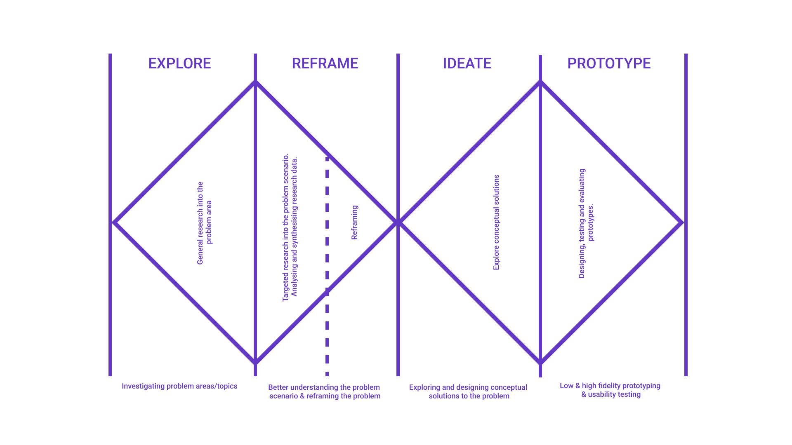
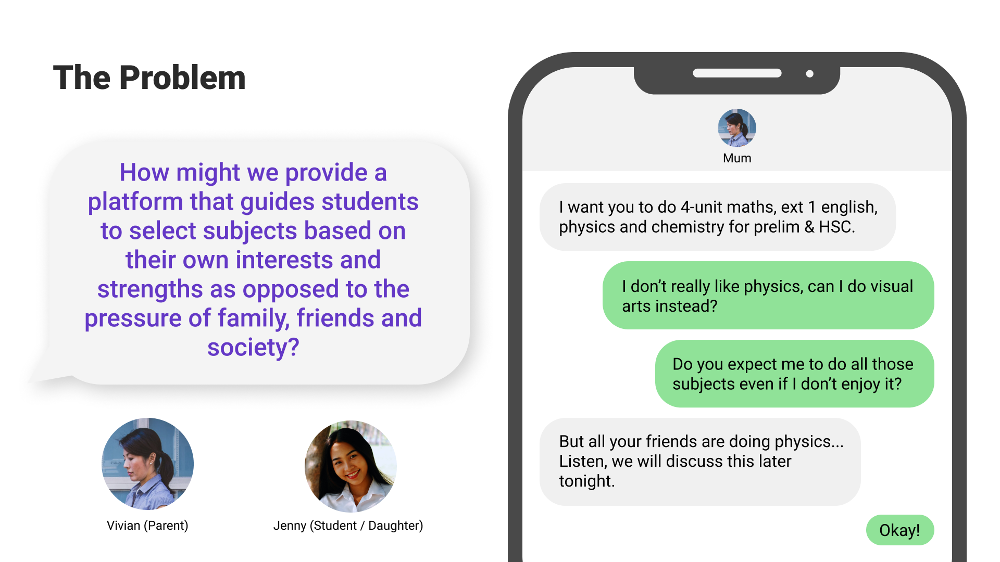
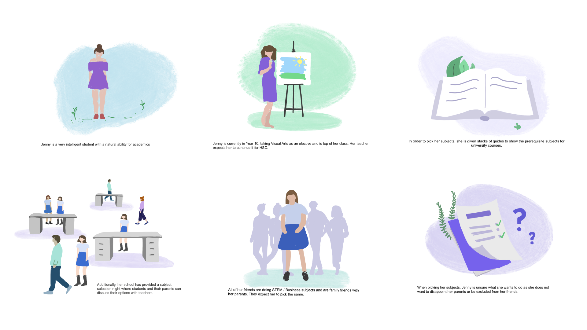
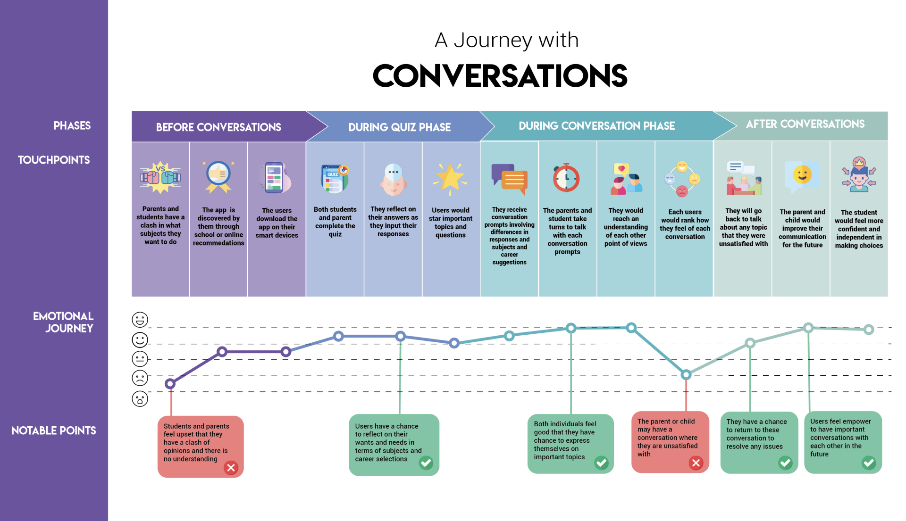

DigiSoc is a UNSW society that brings students together to celebrate Digital Strategy, UX/UI Design and Innovation. In 2020, DigiSoc gave its members an opportunity to collaborate on a Hackathon alongside IBM, where we were to integrate IBM's Watson assistant into our final design. Students had approximately 24 hours to design a solution.
The brief was as follows: "Create a digital experience for a year 10 student to research career pathways and select their year 11 & 12 subjects to align with their teritary and workforce goals. Please ensure that your design includes a working IBM Watson Assistant."
Our ideation was guided by the double-diamond design process. Additional techniques used in order to refine our project included SWOT Analyses, Affinity Diagramming, Brainwriting 6-3-5, Value Prioritisation Grid, Mid-Fidelity Prototyping and User Testing.
Redefining the ProblemInspired by our own personal experiences and the insights from unstructured interviews with our old high-school peers, we viewed the brief through the lens of the Asian second-generation immigration experience. The universal experience that we uncovered through these interviews and online ethnography of Asian community Facebook groups, was that parents often held very strict expectations for their children and deceided major decisions in their lives in order to give them the best opportunity to succeed. The main criterion that our concept had to solve was thus to allow students to be able to pursue their true passions and encourage parents to take a supportive role rather than a controlling one.
Our solution is called "Conversations", a conversation facilitation app to allows students to open up the discussion on their future with their parents, when they may not know where to start.
Storyboard
The app provides two interfaces for either students or parents to connect with each other and discuss their expectations through timed questions and mirrored provocative surveys. For instance, the surveys will be mirrored based on the user as follows:
User Journey Map
Being a group of second-generation immigrants ourselves, we all shared the same experience of struggling to communicate with our parents - not only through our broken mother tongue, but also through completely different cultural upbringings. As we followed our passions in design, we hope others like us will be able to follow their passions fearlessly, too.
{kind=link}